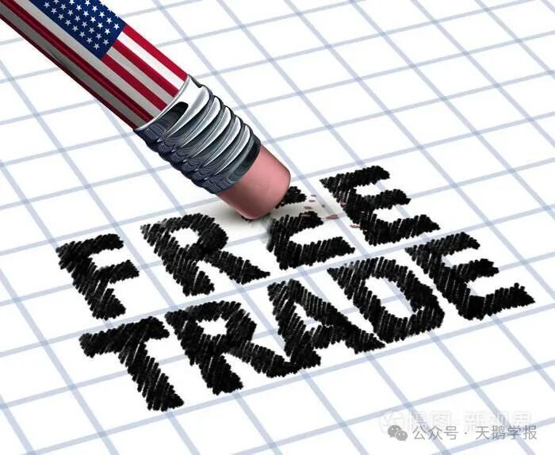
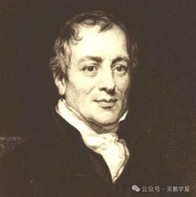
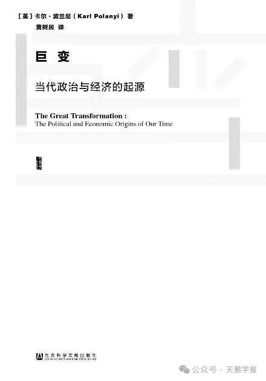
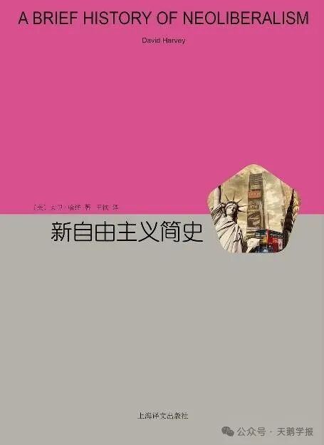
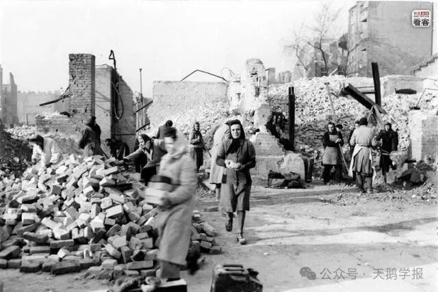

当美国第45任总统大选如火如荼的时候，波士顿的旅游商店里统统都贩卖着两党候选人的周边产品，希拉里和特朗普的形象被做成不停点头的弹簧玩偶，或变成夸张版的漫画头像印在T恤衫上。对大选的娱乐成了美国某种愈发根深蒂固的传统，但是在娱乐之下，美国大选产生的影响却并不那么容易成为人们轻松的调侃，特朗普的胜选使得贸易保护主义在当代被推向高峰，也获得了走进政府的合法性，从亚当·斯密到托克维尔都不言自明的自由贸易受到了极大的冲击，这究竟是一个更好的时代还是更糟的时代？没有人会给出确切的答案，但我们唯一可以得知的是，不管在政治还是贸易领域，我们都在面临一个越来越趋向保守的世界。

特朗普上台后美国试图“擦除”自由贸易
一、不完美的比较优势
时至今日，我仍然坚信自由贸易是可欲的，尽管其面临着比2016年更加严峻的环境，且在深入阅读了许多新自由主义的反对者的著作后，我愈加确信这一群体中的一些观点确实抓错了重点——罪恶的并非自由贸易或全球化本身，而是深嵌在这一全球化进程中的地方性短视政策和政府失职行为。当我们考量贸易的内在价值时，我们必须意识到，虽然贸易本身可以依据一系列标准来评判其正负效应，但在实际的贸易环境中，各种复杂的规则和潜规则，却常常导致它无法达到其预期效果。但这一点并不意味着早期对自由贸易的积极假设本身就是错误的。相反，这需要我们深入回归这些假设的本质。以大卫·李嘉图的比较优势模型为例，该模型在构建时首先假定了涉及两个国家和两个行业，并假设一种要素（即劳动力）能够无摩擦地在这两个行业之间自由流动。李嘉图的比较优势理论衍生出不少变体，这些变体的基本架构和结论依然保持一致，唯一区别在于引入了更多要素，使得模型的解释力得以增强。例如，赫克歇尔—俄林模型引入了资本和劳动，而特定要素模型则将劳动、资本和土地共同纳入考量。

古典政治经济学集大成者——大卫·李嘉图
基于前述诸多假设，李嘉图的比较优势理论主张，每个国家应该遵循“两利相权取其重”的原则，专注于生产其单位劳动投入较少的产品——即具有比较优势的产品，并通过进口劣势产品来优化资源配置。这一逻辑推导极为清晰，并有数学推理作为支撑。然而，正如克鲁格曼在《李嘉图令人费解的思想》中所指出的，却难以为外行人所接受。我认为，克鲁格曼所提到的业内人士与外行人士之间的沟通壁垒确实存在，然而这并不意味着外行人的质疑毫无道理，如果我们希望成为自由贸易及李嘉图比较优势理论的辩护者，就必须勇敢直面现实与理论预设之间的鸿沟。这并不是强迫外行人接受反事实的设定，而是要以更丰富和严谨的视角来理解模型中的理想化、无摩擦的假设，力求将这些设定转换为更可及的现实条件。这样的努力不仅能帮助外行人更好地理解自由贸易的潜在益处，同时也为我们今后的贸易政策提供更健全的理论依据。我们知道，单一的要素会引起很多的误解，随着工业社会的发展，要素已然不可能被局限在劳动力上，尤其是在李嘉图模型中被认为是外生的科技，在国家内部的创新改变生产函数的时候就会变得有些无所适从，如果说这些都是可以通过新的模型设定来进行克服的话，那么自由流动则是李嘉图比较优势理论中的另一重神话。
正如大卫·哈维在《新自由主义简史》中所写的，中国“在一个方面偏离了新自由主义的道路。中国有大量的剩余劳动力，如果要实现社会政治稳定，就必须要么吸收、要么压制这些劳动力。” 如果要发展单一的比较优势产业很显然全部吸收劳动力是不现实的，但它是否可以从预设走向结果，使得就业得到改善呢？这在改革开放后就能看到很明显的例证，随着中国进入世界市场，世界市场的需要使得中国以发展劳动力密集型产业为主，产业规模扩大对人口红利的需要开始迅速吸收劳动力，于是中国进入了生活水平和生产率的双增长阶段。当然从历史的视角出发会发现随着社会结构的变迁，我们可以从动态发展中得到启示，例如说在19世纪晚期，西方的棉纺织业进入中国，希望能打开中国的市场，这项努力最初并不成功，因为英国的棉织品不适合普通中国人的需求，但随后，印度开始成为主要向中国出口棉纱的国家，因为它的粗纱结实耐用，深受中国农民的喜爱，加之其价格低廉，足以和中国本土的手纺棉纱竞争，这引发了中国家庭纺织业的急剧衰落，大多数农民不再纺纱，而是织布继续出售。在这段论述中的前工业化时期，尽管市场的环境发生了改变，纺织产业在被纳入世界市场后突然被变成了劣势产业，但我并没有读到此时关于失业的论述，原因似乎在于，前现代时期中国的劳动力被紧密编织进了家庭单位之中，大多数劳动力被附着在了土地上，延续着黄宗智提出的“内卷”的生产结构。此时的生产是被镶嵌在社会中的，而非完全独立的经济事务。就像卡尔·波兰尼在《巨变》中的论述，此时的“经济本身并非如经济学理论所称的是一个自主体，实际上必须服膺于政治、宗教及社会关系。” 一个脱嵌并且完全自律的市场经济只是空想，但在市场经济的叙事已经成为主流的今天，市场经济的外敌已经在计划经济的失败后不攻自破，不过我们依然可以重拾波兰尼对社会的重视来探讨劳动力的流动如何更加自由——或者说就业如何更无摩擦，那就是编织紧密的社会联系体系，如充分地消除相似行业间的信息壁垒，提供就业培训和就业信息。

卡尔·波兰尼 《巨变：当代政治与经济的起源》 社会科学文献出版社

大卫·哈维 《新自由主义简史》 上海译文出版社
而这又要回到“两个行业”，在李嘉图的假设中是“酒和布”但是在现实中优势行业之间的差异更加宏观，比如说在当今世界，酒和布可以被置换成“高附加值产业”和“低附加值产业”，因为往往一个国家擅长其中一种时，它有更多的能力和动力发展这一产业中的大多数细分产业，这也就是我们常见的美国生产飞机和生产计算机，中国出口T恤衫也出口球鞋，尽管附加值越高的产业似乎越难以实现劳动力的无摩擦转移——因为高度的专业化和精细的分工使技术工人有自己的锚点，但在不同程度的失业救济和专业技能培训下，我认为在实现了依据比较优势理论的专业化分工后，虽然无法达到理论预设中的完美状态，但就业的摩擦会有所减弱，而行业中的劳动者的生活水平也会有所提高。
二、如果放弃比较优势分工
如果以上例子还没能让我们信服自由贸易会导向一个虽然不算完美但仍可以接受的改善世界的话，那就请来看看另一种截然相反的经济模式，也就是将贸易保守主义推向极端的完全试图内生的经济模式——尽管后来事实证明甚至不管是希特勒还是斯大林都需要贸易——但我们尽量找出这个例子，也就是二战期间的纳粹德国，一个在内进行高度分工并试图实现完全的充分就业，但是遏止了一切不受政府领导的对外贸易的情况。当然达到这种状态并不是一蹴而就的，而是经过了历史事件的发酵，一战后，德国受到《凡尔赛条约》的惩罚，该条约使德国支付高额赔偿，导致经济崩溃和通货膨胀，最终演变为魏玛共和国的危机，纳粹党在此时的崛起部分得益于公众对经济状况的不满，刚取得政权时纳粹政府采取了一些凯恩斯主义的措施，增加公共支出以刺激经济，例如投资基础设施建设（高速公路等）与国防项目，为国民经济恢复奠定基础。如果停止在这里，我们或许会认为这里有值得一提的经济促进方案，但是我们所看到的并不是全部，纳粹像一辆疯狂的战车开始全速前进，它的车轮里还裹挟了极权主义的意识形态，就像任何意识形态一样，一旦被推到极致，就开始走上了毁灭的道路。

战后德国艰难的重建
纳粹的经济意识形态是强制的国家干预——瞧，开始走向李嘉图模型的反面了——赫尔曼·戈林主导的“四年计划”着眼于实现德国的自给自足，减少对外依赖，重点发展合成燃料和橡胶等战略资源，这些战略资源将服务于即将或正在发生的战争，与此同时，纳粹政权实施了一种高度干预的经济体制，包括对工业、农业和劳动力市场的严格控制，，国家通过控制价格和工资，实现对经济活动的掌控。这里的问题是，用来发展战略的资源是有限的，甚至连劳动力都是有限的，于是对外的资源掠夺与殖民经济开始了，东欧开始了它们的苦难史，对内则是精准控制劳动力的配置，包括强迫性招募工人，后期甚至使用集中营囚犯作为劳动力，政策极度强调“优先生产”和“优先服务”，以军事为中心，倾斜资源支持军需生产。这种自给自足的模式必然会导致战争，因为随着军工和重工业的快速增长，德国国内市场的需求不足以消化这些过剩生产，由此形成了一个矛盾：一面是生产过剩，一面是资源短缺。对纳粹德国来说只有一种方式可以足够快地同时解决这两个问题，那就是发动战争，而这无异于开启了死亡的螺旋：纳粹经济政策与军事扩张高度融合，产生一种“以战养战”的思维，国家从经济上完全把自己与国际体系隔离，只强调军事竞争的重要性。当然要对这起悲剧负责的还有当时极不稳定的国际贸易体系，在纳粹和世界成功“脱钩”后，随着经济相互依赖性的降低，国内对于和平的需求逐渐被忽视，战争成为转移国内矛盾的重要途径，同时也是实现“大德意志”梦想的途径成为一种必然。这也是和一战后相反，二战后的世界维持了一种尽管是在强权凝视下的微妙的稳定，也和迅速建立起的世界贸易体系有关，通过贸易，我们才能认识他人，认识他者的国度，并且与之产生联系，而这种联系使他国成为我们的“邻人”，从而使得战争的可能性随之降低。换而言之，一个有贸易的世界可能会有剥削和不平等，但一个没有贸易的世界等待我们的却有战争和冲突。
三、结语
李嘉图模型或许因其假设而有一定的乌托邦性质——我们的世界并没有如此地简洁和平滑，但它可以将我们引领到一个充满必然性地方向上，也就是在假设无法成立的地方，恰恰是我们需要进行改变的地方。如果我们能清楚地意识到在假设之后地推演是无瑕的，那么我们需要解决的不是这个推演和这个理论，而是我们凹凸不平的现状，李嘉图模型是一个许诺，一个基于自由贸易的对最优配置的许诺，他“重新调整了经济学的关注点，将其从古典经济学关心的动态经济增长转向新古典经济学关心的静态资源配置” [4]，而更多的，他在亚当斯密自由贸易的地基上建筑了一座大厦的钢筋框架，尽管这座大厦至今还未完工，但已经有越来越多的理论水泥填充了进去，并证明了这幅水泥框架是稳固的。
参考文献：
- 大卫·哈维，新自由主义简史[M]，王钦，上海译文出版社，2016-2 - 城山智子，大萧条时期的中国：市场、国家与世界经济[M],孟凡礼，尚国敏，江苏人民出版社，2010-11 - 卡尔·波兰尼，巨变：当代政治与经济的起源[M],黄树民，社会科学文献出版社，2017-1 - 林毅夫 付才辉. 比较优势与竞争优势:新结构经济学的视角[J].经济研究,2022,5:23-33.